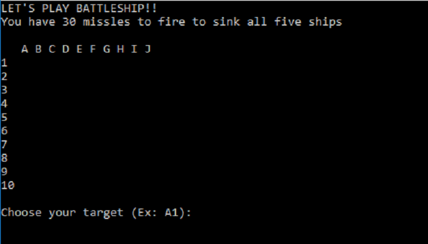
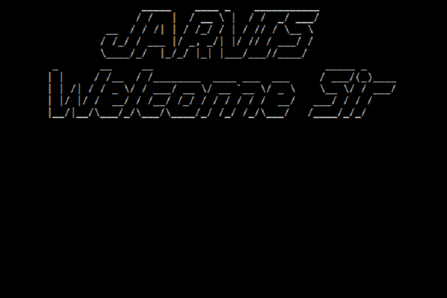

Python
Battleship
This was my first real python program. While looking at the code itself I see many errors, and poor practice, it was a milestone I have to include in my portfolio. As the first functional program built at NSCC.
Jarvis
While Jarvis has it's own page, the program deserves a highlight in my Python Page
The majority of the program is outlined under the page Jarivs though as a brief description. The program uses voice recognition and voice synthesizer to be the ultimate personal assistant, the program can tell you the weather, get top stories, make notes, search for files. Run application, google things for you. And many more things. The voice recognition works in real time, and the program runs in two modes, the main mode and an idle. The main mode is ready to do all the functions that it can, the idle mode activates after no use in 30 minutes, and closes the main program and runs a timed loop and listens for the keyword 'Jarvis' to reactivate.